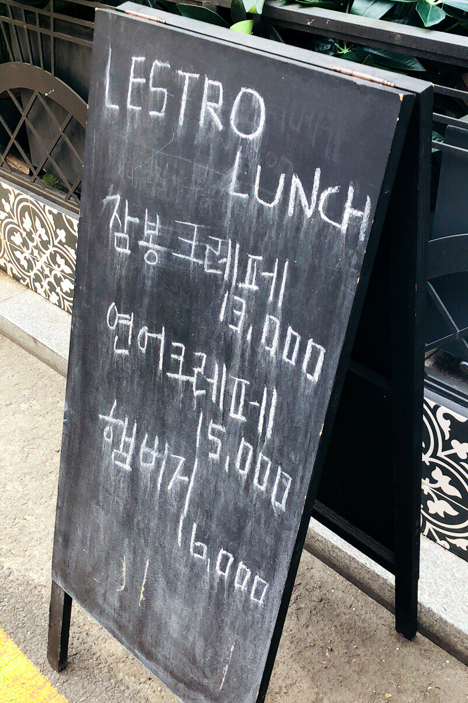
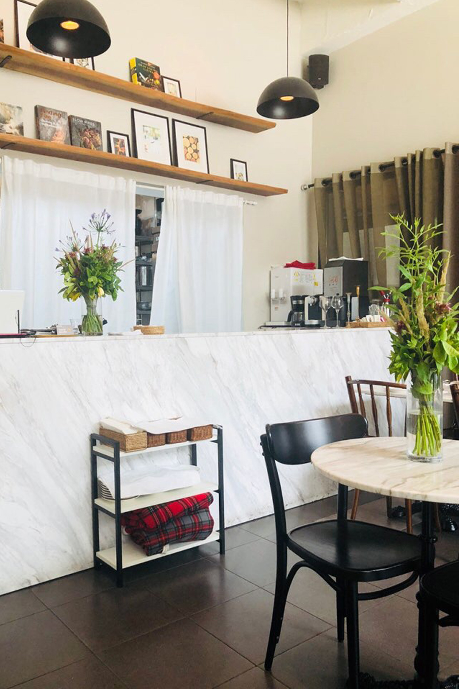
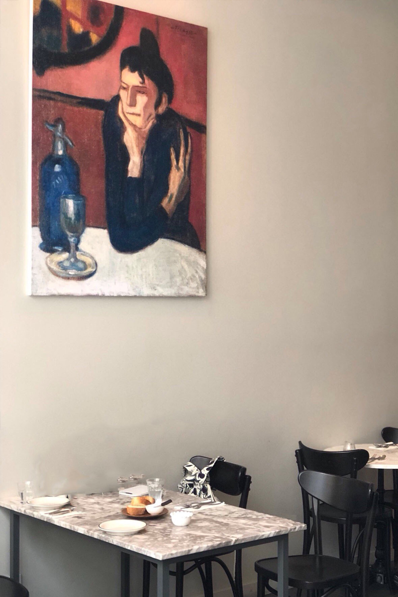
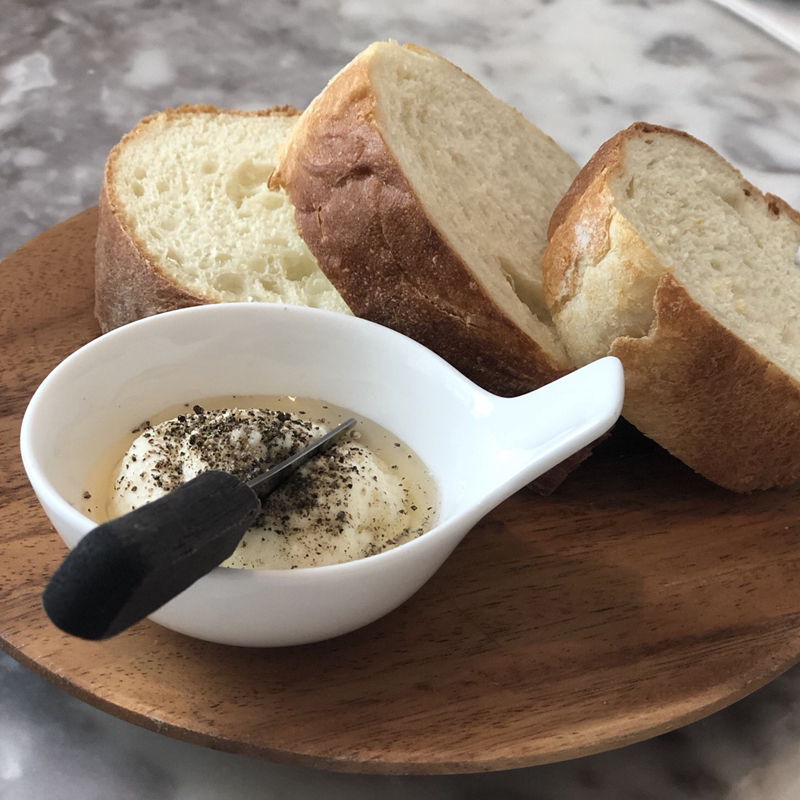
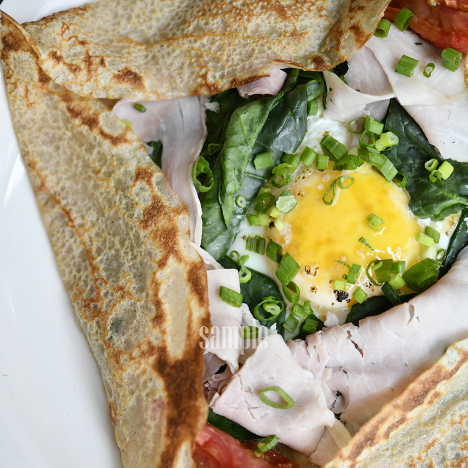
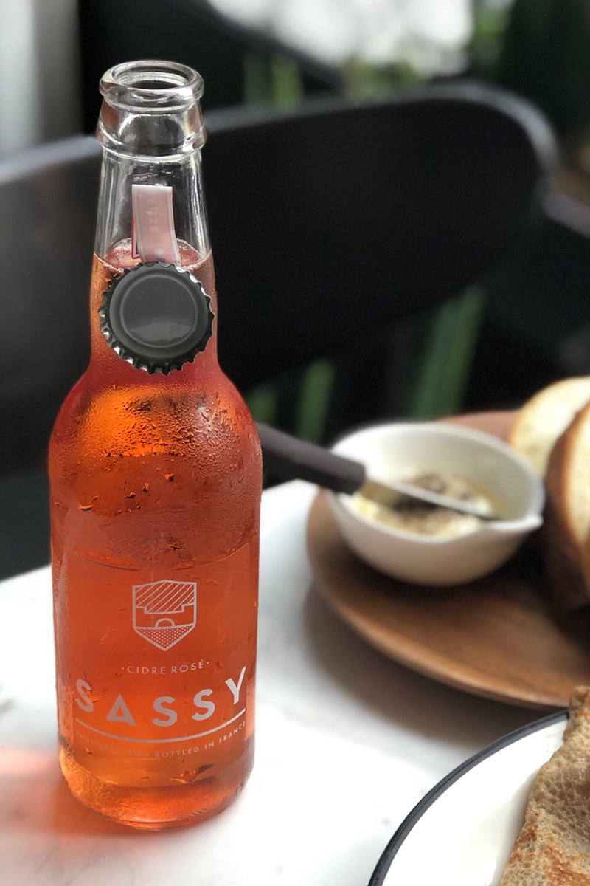
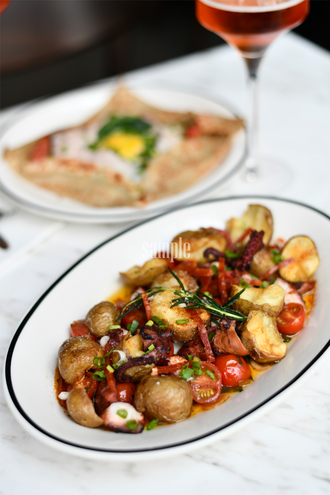

-
mom
labal -
momlabel레스트로
1,745
@lestro_enoteca #서래마을#브런치#레스트로#장지수셰프#잠봉크레페#크레페부케#맛집스타그램#맛스타그램
특별한 브런치 타임 즐기는 법
서래마을 한 쪽 골목에 자리 잡고 있는 레스트로 . 이곳에는 브런치 타임과 점심시간에만 즐길 수 있는 메뉴가 있습니다. 다양한 브런치 음식들이 있지만, 조금은 색다른 음식을 먹는 것만으로도 특별함을 가질 수 있죠. 오전, 낮, 저녁. 시간마다 분위기가 달라지는 서래마을에서 즐기는 브런치 타임은 특별한 시간을 만들어 줄 거예요.
- 
- 
- 
은은한 조명과 창을 통해 들어오는 햇빛만으로 여유로운 브런치를 즐기고 있다는 여유를 느끼고 싶다면, 이곳으로 오길 바란다. 서래마을 골목 한편에 자리 잡고 있는 레스트로는 장지수 셰프가 운영하고 있는 레스토랑이다. 장지수 셰프는 미쉐린 3스타에서 수셰프로도 지낸 적 있는 실력파 셰프로 최근 방송에서도 ‘훈남 셰프’로 주목받고 있는 셰프이다. 요리의 정의를 ‘식재료’로 내릴 만큼, 시장에서 직접 공수해온 신선하고 질 좋은 재료들을 이용해 메뉴로 선보이고 있다. 맘라벨 에디터는 이곳에서 조금은 특별한 브런치를 즐기러 방문했다. 브런치를 좋아하는 에디터는 이곳의 메뉴가 특별하게 느껴졌다고 하니, 지금부터 주목해봐도 좋다.
- 
- 
#특별한 매력을 가진 음식들 메뉴가 나오기 전, 식탁 위에 먼저 올라오는 식전 빵. 이곳에서는 빵에 발라 먹는 소스에 빠져 계속 발라 먹었던 기억이 난다. 리코타 치즈와 마스카포네 치즈를 섞어 만들어 치즈의 고소하고도 달콤한 풍미를 살려준다.
에디터들이 pick한 메뉴 중에서 가장 큰 기대를 받았던 ‘잠봉 크레페’. 크레페는 재료들이 주는 색감과 비주얼로 눈길을 먼저 사로잡았다. 잠봉은 ‘햄’을 뜻하는 데, 잠봉(Jambon)은 프랑스어로 햄을 뜻한다. 돼지나 소 등 다양한 고기를 염장, 숙성 시키는 가공육 ‘샤퀴테리’의 한 종류이다. 뒷다리를 염지하여 오랜 시간 익힌 것으로 샌드위치 등에 주로 이용된다. 이곳은 프랑스 구르메의 잠봉을 사용했는데, 프랑스 가정식에서 빠지지 않는 국민 햄이라고 할 수 있다. 잠봉 햄의 부드러운 식감, 반숙 프라이의 고소함과 시금치, 토마토의 아삭함, 이 세 가지의 조화가 입안 가득 퍼진다. 잠봉 크레페 외에도 연어 크레페, 크레페 부케 등 다른 재료와 모양을 가진 크레페 메뉴들도 있으니 다양하게 즐겨보면 좋을 것이다.
- 
- 
#특별함에 +α 브런치와 함께 즐기기에 좋은 음료들이 많지만, 이날에는 특별히 ‘스파클링 와인’을 선택했다. 이곳에 있는 ‘시드르 로제’는 프랑스 노르망디 지역에서 사과즙을 발효시켜서 만든 사과주로 사이더라고 부르기도 한다. 세계적으로 유명한 미쉐린 3스타 셰프들이 인정한 100% 천연 크래프트 사과 스파클링 와인이다. 핑크빛을 띄고 있는 시드르(Cidre)는 사과의 단맛과 신맛이 적당하게 어우러져 있고, 식전 주로도 적합하다. 평소 로제맛 음료를 즐기는 에디터 S는 로제향이 강하게 느껴져 좋았다고 한다. 특히 글루텐을 함유하지 않은 저칼로리면서도 낮은 도수를 가지고 있는 음료라 부담스럽지 않게 즐기기에 좋다.
#재료가 만들어내는 시너지 신선한 식재료를 이용해 정성스레 요리를 한다는 것은 재료들이 주는 맛에서 느낄 수 있다. 숯불에 구워낸 문어의 부드러운 식감과 적당한 식감의 토마토, 바삭하게 튀긴 감자와 쫄깃함을 더해주는 육포까지. 다양한 재료들이 어우러져 만들어내는 시너지를 느낄 수 있었다.
레스트로에서는 브런치뿐만 아니라 다양한 런치 메뉴와 디너 요리들도 선보이고 있다. 브런치를 먹어본 후, 다른 메뉴도 먹어보고 싶다는 말이 나왔을 정도 메뉴들이 주는 매력들이 인상 깊다. 특별한 브런치 타임에 조금의 특별함을 더하고 싶다면 이곳을 방문하는 것도 좋을 것 같다.
Editor.D
브런치를 많이 먹어봤지만, 이곳의 크레페는 브런치로 제격이다. 너무 무겁지 않은 느낌이라 부담 없이 먹을 수 있어 좋았던 곳! 다른 메뉴들도 먹어보고 싶다.Editor.S
색다른 브런치들의 집합소. 브런치로 문어 샐러드와 크레페 라니. 처음에는 갸우뚱거렸지만, 그 맛은 가히 환상적이었다. 메뉴 연구에 대한 셰프님의 노력이 느껴졌다.
- 서울 서초구 서래로6길 10
- 매일 11:30 - 22:00
- Lunch time 11:30 -15:00
- Break time 15:00~17:30
- 02-537-3829
- 잠봉크레페 1만3000원, 문어샐러드 2만2000원
- 연어크레페 1만 5000원, 햄버거 1만6000원
- Editor. 김다인
- PHOTOGRAPHY. 이성호